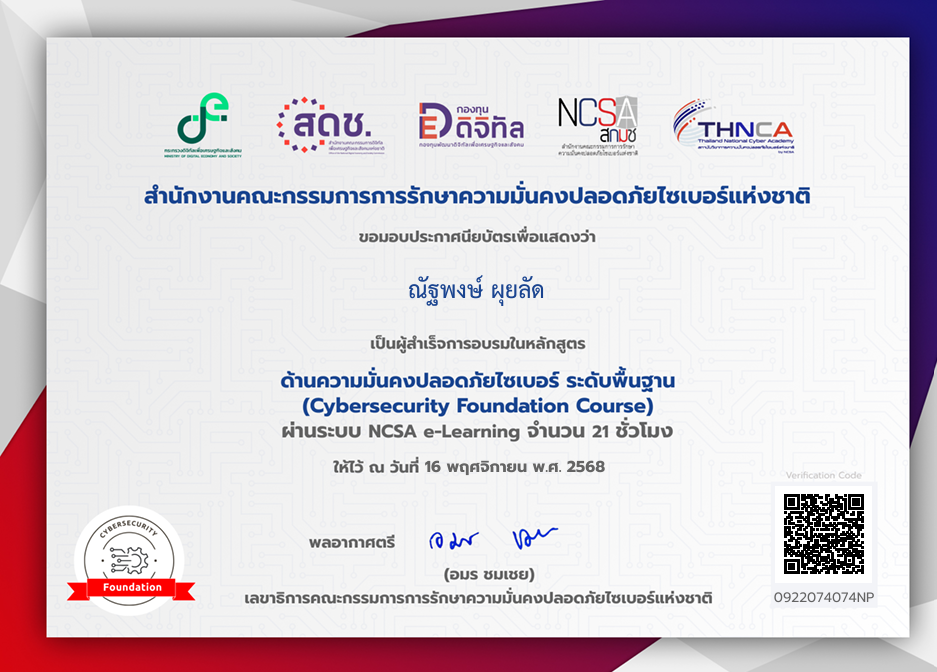
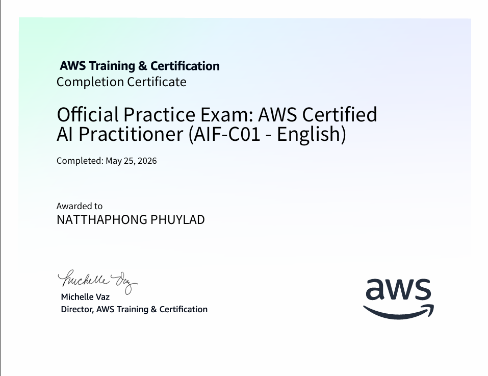
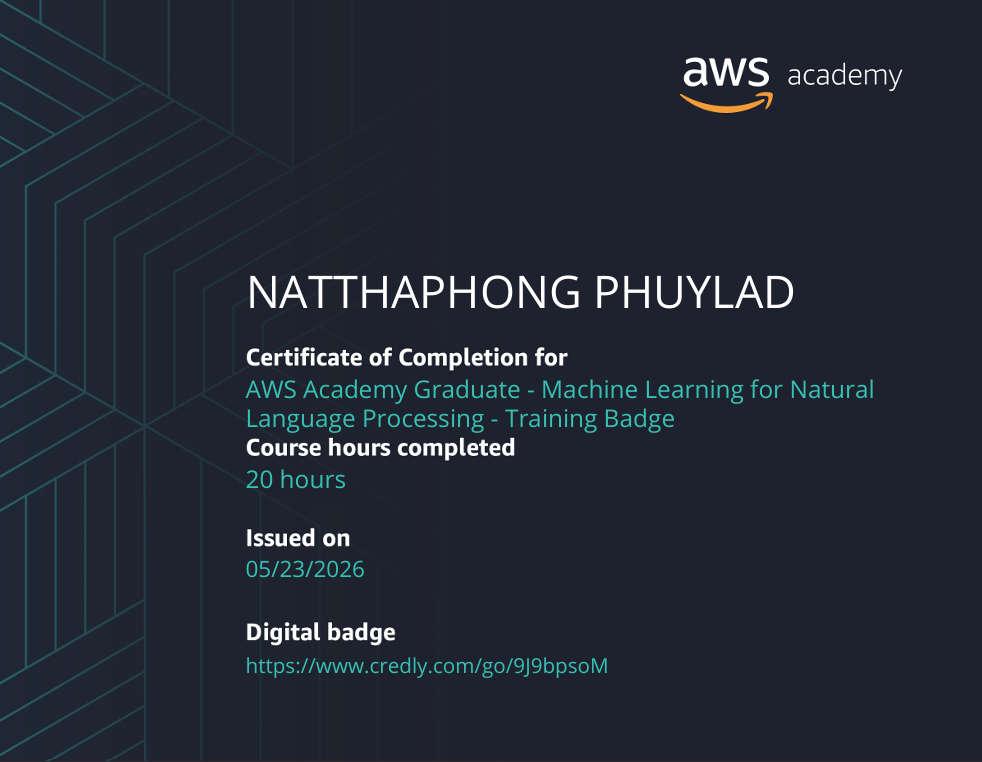

Projects ผลงานของคุณ

01. Competency Assessment System
[ระบบประเมินและพัฒนาศักยภาพบุคลากร (Competency Assessment & Individual Development Plan System)]
ReactNode.jspostgres / mysql
สวัสดีครับ ผมณัฐพงษ์ ผุยลัด ชื่อเล่น ดีโอ นักศึกษาสาขา Computer Science (Data Science and Cybersecurity) คณะ Information Technology and Innovation มหาวิทยาลัยกรุงเทพ สนใจงานด้าน Cybersecurity และ Data Science เป็นพิเศษ ชอบลงมือทำโปรเจกต์จริงและเรียนรู้เครื่องมือใหม่ ๆ อยู่เสมอ ทั้งการเขียนโปรแกรมและการทดสอบระบบความปลอดภัย
อยากนำความรู้ที่เรียนมาไปใช้แก้ปัญหาจริงในองค์กร ได้ฝึกทักษะการทำงานร่วมกับทีมมืออาชีพ เรียนรู้กระบวนการทำงานจริงด้าน Cybersecurity/Data Science นอกเหนือจากในห้องเรียน และสร้างประสบการณ์เพื่อพัฒนาตัวเองให้พร้อมสำหรับการทำงานในอนาคต
{
:
[ระบบประเมินและพัฒนาศักยภาพบุคลากร (Competency Assessment & Individual Development Plan System)]
:


